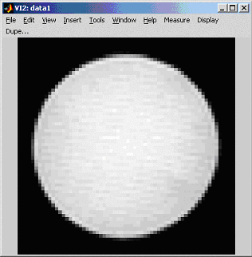
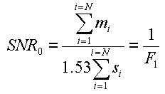
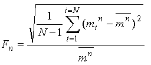
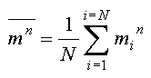
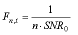
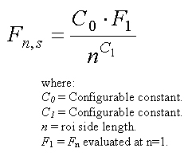
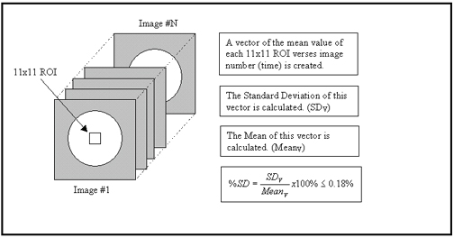
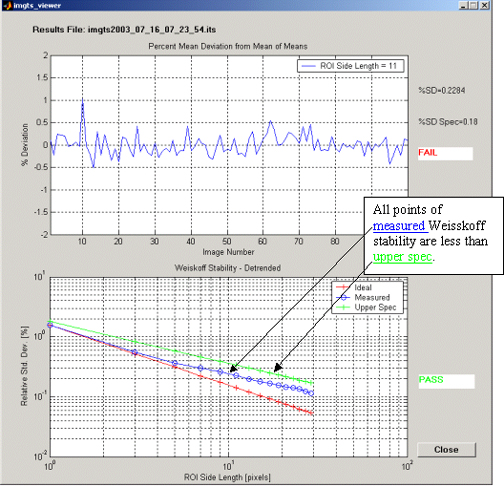

Proprietary to General Electric Company
Direction 5440000, Rev# 5
Signa HDxt Service Methods
Module Version 1.0, Version Date 4/25/07
Proprietary to General Electric Company |
Functional MRI (fMRI) relies on the correct detection of very small signal changes (on the order of 1% or less) in images collected over a time range. Image to image stability over time is of upmost importance to fMRI. All MR scanner related instabilities must be minimized as much as possible to allow for proper fMRI activity detection in clinical studies.
The Image Temporal Stability Tool is used to measure and quantify the fMRI image temporal stability. The tool operates in two primary modes:
Mode 1 automatically acquires fMRI images using a default protocol, analyzes the images, and reports the results
Mode 2 (expert mode only) is used to analyze any time series collected image data set, regardless of protocol or PSD used. The images must have been already acquired and reside in the host database prior to running this mode.
A time series of images (either acquired in automatic mode, or defined from an exisiting image data set) are used in the analysis. The images must contain a centered phantom with a circular cross section. Figure #1 illustrates a single fMRI image of the 17cm Head TLT phantom.
Illustration 1: Example phantom image from fMRI scan

Each temporal image from the same slice location is used to analyze the image temporal stability. The following steps are done on the images for analysis:
Read in all MR image data and image header(s) in DICOM format.
Read in EPI Temporal Stability config file default values.
SNR0 can be defined per:

Where:
mi=mean of ROI in center of phantom.
si = Standard deviation of ROI placed in background noise.
N = Number of images (temporal phases).
F1 = Fn per (2) evaluated at n=1.
Calculate the Fn vector . This is the relative fluctuations of the nxn pixel ROI of the N point temporal images.

min = mean of the nxn ROI on the ith temporal phase.
N = Number of images (temporal phases).

Calculate the “theoretical best” Fn,t vector.

Calculate the “specification” vector, Fn,s

There are two specifications that the Image Temporal Stability Tool must pass for a successful run:
1. The Standard Deviation of the detrended means of the default ROI (11x11 pixels) on all temporal images divided by the mean of the means of the same default ROI’s times 100, must be less than the default %SD Spec of 0.18%. Illustration 2 illustrates this measurement.
Illustration 2: Calculation of the relative %SD variance of the means

2. The measured Weisskoff stability plot must be less than or equal to the upper specification plot for every point. This is illustrated in Figure #3
Illustration 3: Showing Passing Weisskoff Stability Plot
